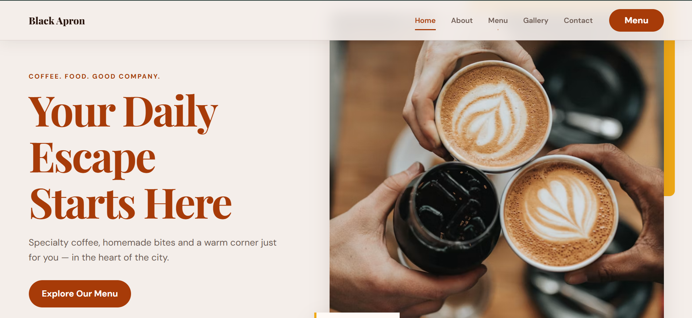

Case study · Website design & development
Black Apron Restaurant
A responsive restaurant experience that helps visitors understand the offer, explore the atmosphere and find contact and reservation information.

Project overview
A restaurant experience that starts online.
The Black Apron demo presents a restaurant through a visually led, responsive interface with clear routes to its menu, gallery, contact details and reservation information.
The original problem
Visitors need the essentials without friction.
A restaurant website must communicate atmosphere while making practical information easy to reach on a phone.
Process
Structure the visit, then shape the mood.
- Prioritize menu, atmosphere and contact information.
- Design the page hierarchy and responsive layouts.
- Build reusable front-end sections.
- Test navigation and presentation across screen sizes.
Final solution
A welcoming responsive site.
- Menu discovery
- Restaurant gallery
- Contact information
- Reservation section
Technology
Front-end web development.
The public demo confirms a responsive website. Specific frameworks or deployment details are not claimed here because they have not been supplied in the project record.
Outcome
A complete, browsable restaurant demo.
The live project is available for direct review. Analytics, conversion results and a client testimonial are not currently available, so none are claimed.
Need a website customers can use easily?
Start a project